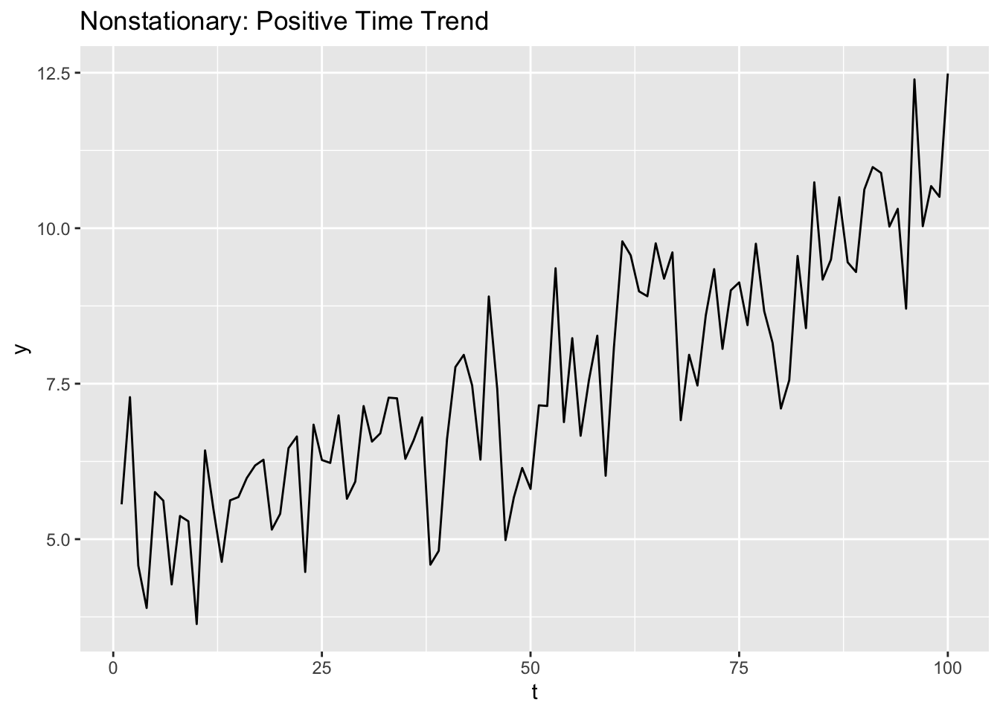
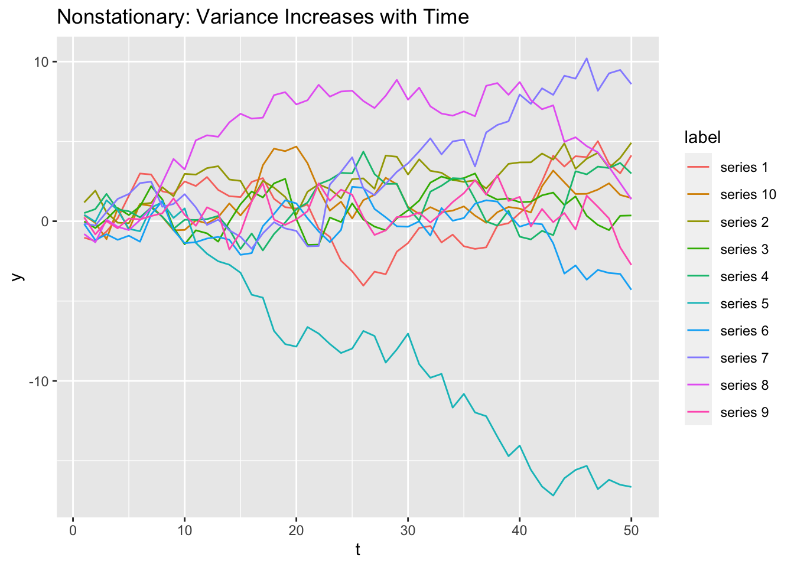

library(tidyverse)8 Stationarity
8.1 Overview
What to expect in this chapter:
- In 8.2 we’ll learn two functions from the tidyverse
reduce(.x, .f)andaccumulate(.x, .f). We’ll use these functions to generate autocorrelated data for time series simulations. - Section 8.3 explains how to generate a random walk and the 3 conditions for a time series to be stationary.
- In 8.4 we’ll explore some examples about how running regressions using nonstationary processes can result in spurious (nonsense) regressions.
Definition. Random Walk: a time series process \(y_t\) where \[y_t = y_{t-1} + \varepsilon_t\] Where \(\varepsilon_t\) is iid mean zero.
Definition. Stationarity: If a time series process meets all three of these conditions, you can say it is stationary. If it violates any, you can say it is nonstationary.
1) The expected value of the process is independent of time: \(E[y_t] = E[y_{t - k}]\) for all \(k\).
2) The variance of the process is independent of time: \(Var(y_t) = Var(y_{t-k})\) for all \(k\).
3) The series may be autocorrelated, but the nature of the autocorrelation can’t be changing over time: \(Cov(y_t, y_{t-k}) = Cov(y_s, y_{s-k})\) for all \(t\), \(s\), and \(k\).
8.2 reduce(.x, .f) and accumulate(.x, .f)
The last two tidyverse functions we’ll learn in this class are reduce() and accumulate(). They’re from the same family of functions as map(): notice they take the same arguments, a vector .x to iterate over and a function .f to apply. The way that they apply the .f is a little different though.
8.2.1 .f can be named, anonymous, or a formula
Just like with map(), the .f in reduce can be a named function:
reduce(.x, intersect)
Or a (2-argument) formula:
reduce(.x, ~ intersect(.x, .y))
Or a (2-argument) anonymous function:
reduce(.x, function(x, y) {intersect(x, y)})
8.2.2 sum is a reduced +
8.2.3 accumulate(.x, .f)
8.3 Stationarity
How does reduce() and accumulate() help us with time series econometrics? We can use accumulate() to generate an autocorrelated series to do monte carlo simulations.
For example, if you wanted to generate data from a process like this:
\[y_t = y_{t-1} + u_t\]
Where \(u_t\) is iid \(N(0, \sigma^2)\), you can use accumulate() to do that. By the way, this process is defined as a random walk, and it’s how we’d model series driven by speculation like stock prices or housing prices. In markets where speculation is a major driver, the best guess you can make about the price of a stock tomorrow is its price today (if you had a better guess, you could make lots of money, but the point is, no one can consistently). That’s what a random walk is: notice \(E[y_{t+1} | y_t] = E[y_t + u_{t+1} | y_t] = y_t\) since we assume \(u_t\) has mean 0.
To generate data from a random walk, maybe you’d try this (but you’d get an error):
tibble(
u = rnorm(n = 100),
y = lag(y) + u
)
#> Error in lag(y) : object 'y' not foundThe error message says “object ‘y’ not found” because it can’t evaluate lag(y) until y exists. What can you do instead?
Take u = c(1, -1, 0, 1, 1) and let \(y_1 = u_1 = 1\).
What is \(y_2\) if \(y_t = y_{t-1} + u_t\)?
\[y_2 = y_1 + u_2 = u_1 + u_2 = 1 - 1 = 0\]
How about \(y_3\), \(y_4\), and \(y_5\)?
\[y_3 = y_2 + u_3 = u_1 + u_2 + u_3 = 1 - 1 + 0 = 0\]
\[y_4 = y_3 + u_4 = u_1 + u_2 + u_3 + u_4 = 1 - 1 + 0 + 1 = 1\]
\[y_4 = y_4 + u_5 = u_1 + u_2 + u_3 + u_4 + u_5 = 1 - 1 + 0 + 1 + 1 = 2\]
So we should get \(y = c(1, 0, 0, 1, 2)\), but the more important thing to notice here is that for a random walk, \(y_t = \sum_t u_t\): a random walk is an accumulated sum!
The correct way to generate a random walk in the tidyverse is to accumulate a sum of u’s:
tibble(
u = rnorm(n = 10),
y = accumulate(u, `+`)
)# A tibble: 10 × 2
u y
<dbl> <dbl>
1 0.164 0.164
2 -1.95 -1.78
3 -0.130 -1.91
4 -1.42 -3.33
5 -0.889 -4.22
6 -1.73 -5.95
7 -0.155 -6.11
8 2.14 -3.97
9 -2.48 -6.44
10 -3.05 -9.49 8.3.1 first difference a random walk to recover u
Notice what happens when we take the first difference of a random walk:
tibble(
u = rnorm(n = 10),
y = accumulate(u, `+`),
y_diff = y - lag(y)
)# A tibble: 10 × 3
u y y_diff
<dbl> <dbl> <dbl>
1 0.165 0.165 NA
2 -0.840 -0.675 -0.840
3 -1.16 -1.83 -1.16
4 -0.828 -2.66 -0.828
5 1.31 -1.35 1.31
6 0.620 -0.730 0.620
7 1.82 1.09 1.82
8 0.798 1.89 0.798
9 0.0250 1.91 0.0250
10 -0.266 1.65 -0.266 Notice that y_diff is identical to u (except u[1] can’t be identified)! Why?
\(y_t = y_{t-1} + u_t\)
Subtract \(y_{t-1}\) from both sides and you get that the first difference is equal to u:
\(y_t - y_{t-1} = u_t\)
8.3.2 3 conditions for stationarity
There are 3 conditions for a process to be stationary:
- The expected value of the process is independent of time: \(E[y_t] = E[y_{t - k}]\) for all \(k\).
If the time series process has a time trend, it will violate this condition. Example where \(y_t = 5 + .05 t + u_t\):
tibble(
t = 1:100,
y = 5 + .05 * t + rnorm(n = 100)
) %>%
ggplot(aes(x = t, y = y)) +
geom_line() +
labs(title = "Nonstationary: Positive Time Trend")
- The variance of the process is independent of time: \(Var(y_t) = Var(y_{t-k})\) for all \(k\).
This is the condition that makes random walks nonstationary. To see this, let’s see 10 random walks in one plot:
Code
tibble(
# t is 1:50 repeated 10 times, one for each random walk.
t = rep(1:50, times = 10),
# y is 10 random walks. I wanted to repeat the process 10 times so
# I put it into a map() call. The thing I wanted to repeat 10 times
# was an accumulated sum of random normals (a random walk).
# map() outputs a list of length 10 where each element is a random
# walk of length 50. I used unlist() to drop the structure and make
# y a vector of length 500.
y = map(1:10, function(...) accumulate(rnorm(n = 50), `+`)) %>% unlist(),
# To differentiate the 10 random walks, I need to label them. rep()
# with an "each" argument will repeat "series 1" 50 times, then
# "series 2" 50 times, etc.
label = rep(paste0("series ", 1:10), each = 50)
) %>%
ggplot(aes(x = t)) +
geom_line(aes(y = y, color = label)) +
labs(title = "Nonstationary: Variance Increases with Time")
Notice that all the random walks start near 0 at t = 1, but then start (randomly walking) out and may end up very negative or very positive by t = 50. You’ll prove the the variance of a random walk increases with time more rigorously in classwork 14.
- The series may be autocorrelated, but the nature of the autocorrelation can’t be changing over time: \(Cov(y_t, y_{t-k}) = Cov(y_s, y_{s-k})\) for all \(t\), \(s\), and \(k\).
If a series violates any of these 3 conditions for stationarity, it is called a nonstationary process and if you put it into a regression, you can often get spurious (nonsense) results. In general when it’s possible, economists transform series that they think are nonstationary into stationary series before running regressions with them.
8.4 Spurious regressions
Take a look at this website for some examples of spurious correlations:
It’s absolutely true that US spending on science correlates strongly with suicides by hanging, strangulation, and suffocation. But the relationship is obviously not causal. These two processes may both just have an upward time trend (they’re nonstationary).
Scrolling down, the number of films Nicolas Cage appeared in correlates strongly with the number of people who drowned by falling into a pool. But we probably don’t think there’s any kind of causal relationship there. And neither series seem to have time trends. But both trends seem to be autocorrelated, and they may even be random walks, which would make them nonstationary.
8.4.1 Time Trends
Let \(x_t\) and \(y_t\) be two variables that are totally unrelated, except that they both have time trends.
If you fit the model: \[y_t = \beta_0 + \beta_1 x_t + u_t\]
You’ll likely be able to reject the null hypothesis that \(\beta_1 = 0\). Why? Omitted variable bias, where \(t\) is the omitted variable.
If the true DGP processes for x and y are:
\[y_t = \alpha_0 + \alpha_1 t + w_t\]
\[x_t = \gamma_0 + \gamma_1 t + v_t\]
Where \(w_t\) and \(v_t\) are both iid \(N(0, \sigma^2)\), and you fit \[y_t = \beta_0 + \beta_1 x_t + u_t\]
Omitting \(t\) means \(t\) gets absorbed into \(u_t\), and since \(t\) covaries with \(x_t\) through \(\gamma_1\) and \(y_t\) through \(\alpha_1\), \(\hat{\beta_1}\) will be biased and inconsistent, and the sign of the bias will be the same sign as \(\alpha_1 \gamma_1\).
That is, if both \(x\) and \(y\) have positive time trends, it will look like and increase in \(x\) causes an increase in \(y\). The same is true if both \(x\) and \(y\) have negative time trends. If \(x\) has a positive time trend and \(y\) has a negative time trend (or the other way around), \(\hat{\beta_1}\) will be negative: it will look like increases in \(x\) cause decreases in \(y\). But of course all these results would be spurious (nonsense) because there’s no real relationship between \(x\) and \(y\), it’s just that both have time trends.
8.4.2 Random Walks
If \(x_t\) and \(y_t\) are two unrelated random walks:
\[x_t = x_{t-1} + v_t\]
\[y_t = y_{t-1} + w_t\]
Where \(v_t\) and \(w_t\) are iid mean 0.
As you’ll show in classwork 14, \(Var(x_t) = t Var(v_t)\) and \(Var(y_t) = t Var(w_t)\). Random walks are nonstationary because their variances are not independent of time. And when we fit the model:
\[y_t = \beta_0 + \beta_1 x_t + u_t\]
\(y_{t-1} + w_t\) gets absorbed into \(u_t\). Since \(y_t\) is a random walk, \(y_{t-1}\) is also a random walk, and \(u_t\) will become highly autocorrelated. Recall the consequences of \(u_t\) being autocorrelated:
- OLS estimates remain unbiased, but
- Conventional standard errors will be incorrect, and
- OLS isn’t BLUE because FGLS is more efficient.
The first two consequences are the ones to focus on here: \(\hat{\beta_1}\) is unbiased, so its distribution will be centered on 0, but because of consequence 2, conventional standard errors will be wrong (and in this case, they will be way too small). As a result, you’ll incorrectly reject the null that \(\hat{\beta_1} = 0\) about 3/4 of the time. This is a very famous result from Granger and Newbold (1974) which you’ll replicate in classwork 14.
How do you transform a random walk into a stationary series? You can take the first difference.
8.5 Exercises
Classwork 13: Time Trends
Koans 19-20: reduce and accumulate
Classwork 14: random walks
8.6 References
Dougherty (2016) Chapter 13: Introduction to Nonstationary Time Series